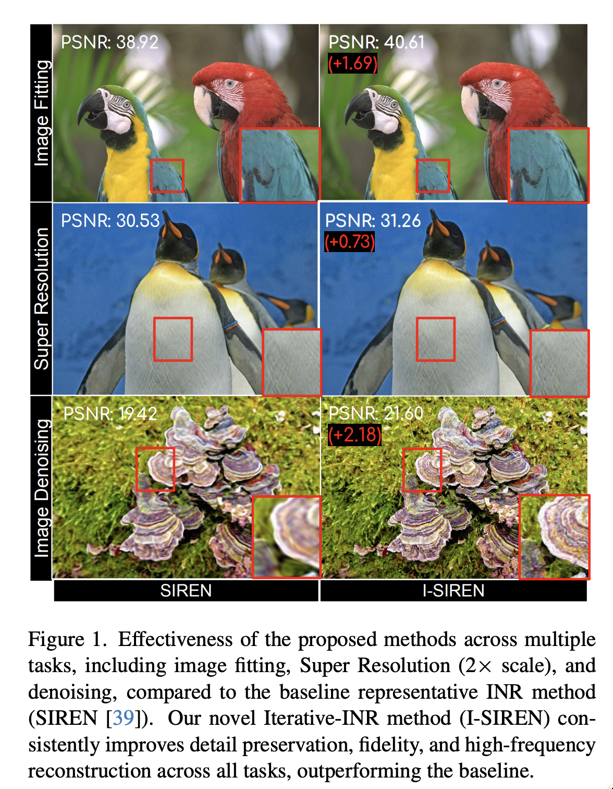
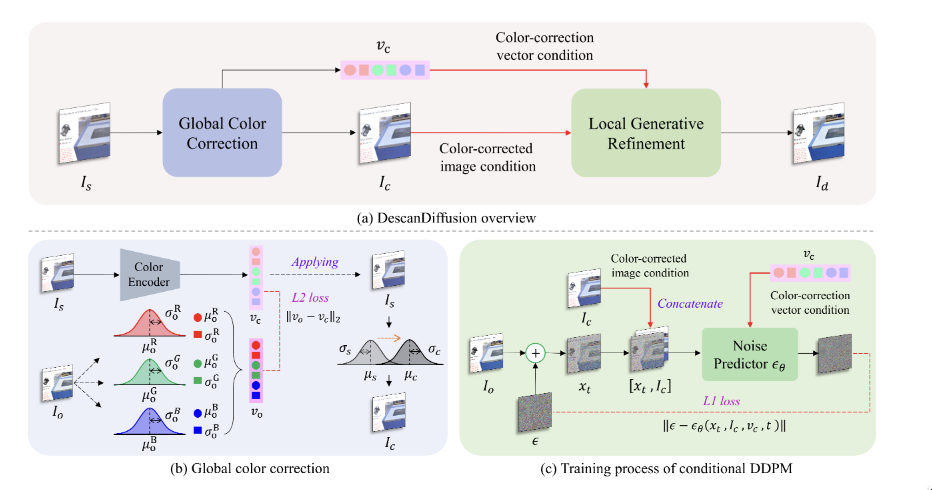
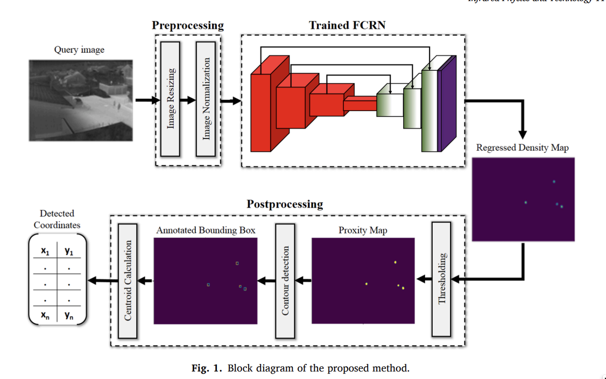
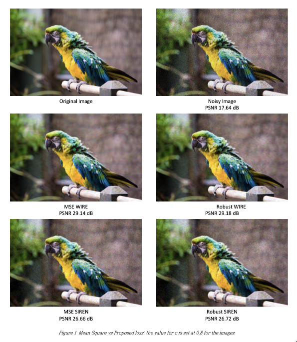

Updates
| 2026: | Presented I-INR at AAAI 2026, Singapore. |
| 2025: | I-INR accepted at AAAI 2026. Congratulations to the co-authors. |
| 2025: | Submitted 2 papers to top AI conferences. |
| 2025: | I-INR preprint available on arXiv. |
| 2024: | Attended NeurIPS 2024, Vancouver. |
| 2024: | Presented Descanning at AAAI 2024, Vancouver. |
| 2024: | AAAI paper accepted: Descanning: From scanned to the original images with a color correction diffusion model. |
| 2022: | Joined MLVC Lab, Kyung Hee University as a Ph.D. student. |
| 2021: | First-author paper published in Infrared Physics & Technology. |
| 2019: | Joined CISS Lab, ITU Lahore as a Research Assistant. |
Selected Publications
-

I-INR: Iterative Implicit Neural Representations
AAAI Conference on Artificial Intelligence, 2026 · Singapore
In collaboration with LTCI, Télécom Paris & Adobe Research
-

Descanning: From Scanned to the Original Images with a Color Correction Diffusion Model
AAAI, Vol. 38 No. 2, 2024
In collaboration with Adobe Research
-

Journal · Infrared Physics & Technology
Human Detection in Aerial Thermal Imaging using a Fully Convolutional Regression Network
Infrared Physics & Technology 116 (2021) · Impact Factor: 3.4
-

Workshop · KMBE 2024
Improving Implicit Neural Representations with Robust Loss Function
Korea Broadcasting Media Engineering Conference, 2024: 998–1001
Projects
- MRI Acceleration & Reconstruction with AiLive & NYU — Diffusion models and multi-modal frameworks for faster, accurate clinical MRI diagnostics.
- Video Quality Assessment for Streaming with KEI Media — Perceptual benchmarking and no-reference quality metrics for streaming platforms.
- Microscopic Malaria Detection — Low-cost AI system with Lahore General Hospital (CISS Global) for virtual staining and low-resource diagnosis.
- AI-based Sports Card Grading Acquired by Beckett Media — Algorithm lead at Due Dilly; automated PSA/Beckett-standard grading. Startup acquired.
- Track-following Robot (PID) — 🏆 1st Place nationally, AirTech 2017.
- Embedded Vehicular Security System — 🏆 2nd Prize, All Pakistan DICE-IET 2019.
Honors & Awards
- Presidential Scholarship — Kyung Hee University
- 2nd Prize — All Pakistan DICE-IET Competition 2019
- 1st Position — National Robotics Competition, AirTech 2017
- Top Semester Positions — UET Taxila (Merit Scholarships)
- Winner — Circuit Mania, ElectroMinds Gala Expo 2016
- Recipient — Prime Minister's Laptop Scheme